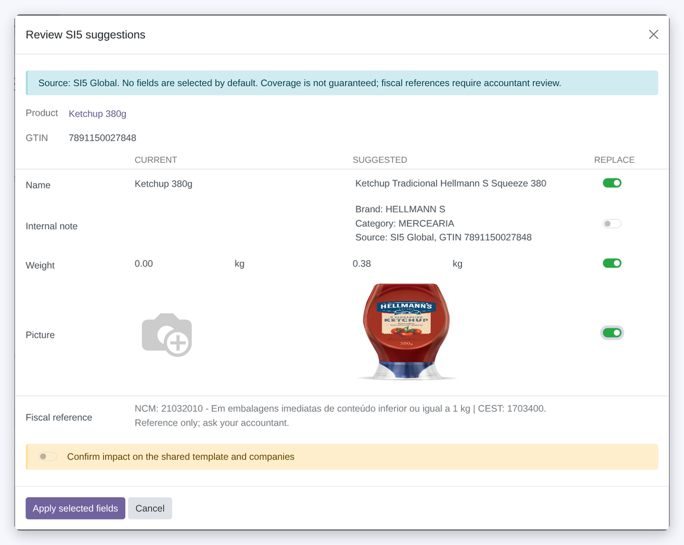
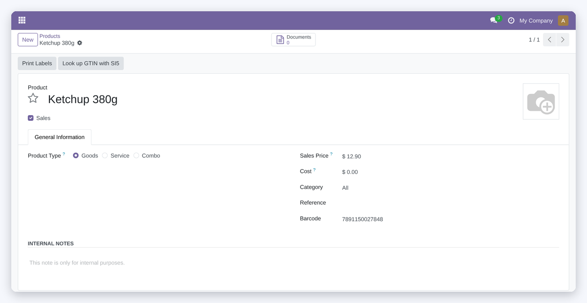
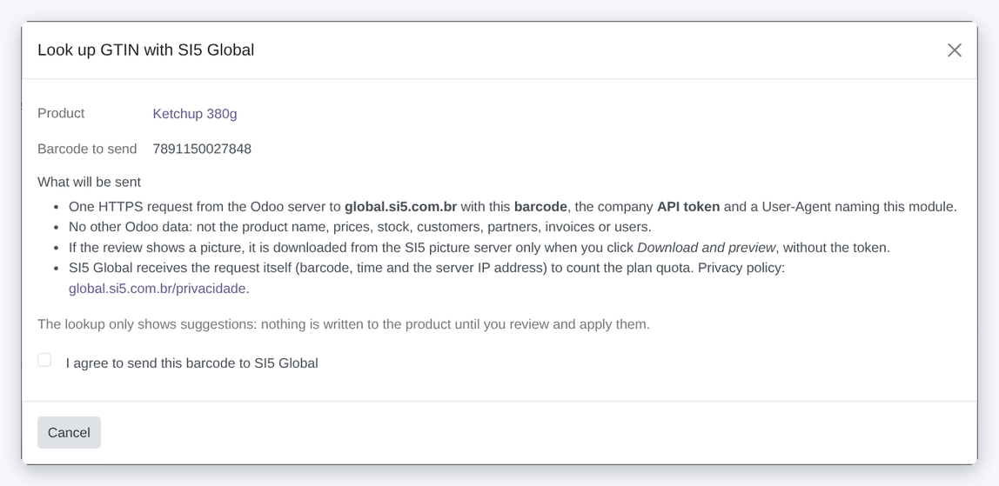
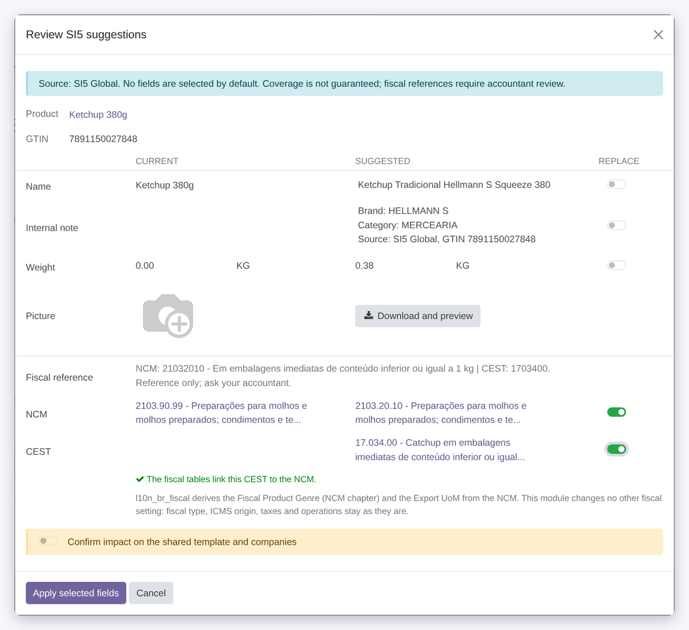

Look up a product barcode (GTIN) on SI5 Global, a catalogue of Brazilian retail products, and review suggestions for name, picture and weight, plus NCM / CEST references.
Each lookup asks for your consent before anything is sent, and nothing is written until you switch on each field in the review.

The button opens a dialog that says what will be sent. The box starts unticked; Cancel or closing sends nothing.
Current and suggested values side by side. Nothing comes pre-selected: switch on only what you want to replace.
Shown as a reference for your accountant. With OCA l10n_br_fiscal, the companion module GTIN Brazilian Fiscal offers the matching NCM and CEST records for review.
Open a product that has a barcode and click Look up GTIN with SI5. Works with EAN-8, EAN-13, UPC-A and GTIN-14. Lookups only run when a user clicks: never on import, on change or in bulk.


The dialog lists what goes to SI5 Global. The Look up button only appears after you tick I agree to send this barcode to SI5 Global, and the server checks the box again.
Cancel, the close button or Esc leave without any request.
The picture is downloaded only when you click Download and preview; it is validated (format, size, dimensions) and the bytes you saw are the bytes applied. WebP is converted so thumbnails and PDF reports work.
Changes to data shared by variants or companies need an extra confirmation. Fields you did not switch on stay as they were.

Optional companion module for OCA l10n_br_fiscal. It offers the NCM and CEST records whose codes exactly match the suggestion; nothing is guessed.
The review says whether the fiscal tables link the CEST to the NCM. When they do not (some CEST rows have no NCM link) or the product has no NCM, the CEST is marked not verified.
Always a suggestion, only when its switch is on.
l10n_br_fiscal and GTIN Brazilian FiscalIt does not set prices, taxes, fiscal type, ICMS origin, tax rates, stock or accounting data.
An SI5 Global account and API token are required (one token per company).
Account, token, plans and the privacy policy are at global.si5.com.br.
Stable for assisted barcode lookup, explicit consent and selective application of reviewed suggestions. Validated with automated tests and isolated Odoo 18 installation/upgrade checks. This is not a claim of production observation, catalogue accuracy or fiscal certification. Review suggestions before applying them.
SI5_TOKEN_COMPANY_<id> server environment variable.l10n_br_fiscal installed, GTIN Brazilian Fiscal installs automatically and adds the NCM / CEST review.Support: dev@si5.com.br